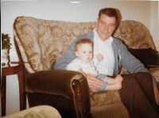

Leslie Lawrence
1925–1986
Photo Gallery

There are a number of photographs and Documents that refer to Leslie's Army Service, these can be seen here.
Overview
Leslie was the third child of Emily and Walter Lawrence, born in Windsor in 1925
Timeline
Notes
Leslie was born on 26th August 1925 at No.4 Alma Cottages, In Windsor, These cottages were demolished and the area is now part of Ward Royal, The actual location of the cottages is the entrance to the car park, behind "The Hope" public house on Alma Road.
In 1928 Emily, Leslie’s mother married Arthur Weeks, this was not a very good situation, for stories told by Leslie’s sister, Evelyn, Arthur would take no notice of the girls but would spend a lot of time with Leslie, whether this was a story out of Jealousy we will never know. But the marriage did not last for long. In Leslie's early years, during school holidays , Leslie would be looked after by Evelyn, See Evelyn's writings for details.
in 1939 Leslie was working as a "house boy" at Eton College, the job was probably arranged by Evelyn, as she was already working there at this time. The job as a House boy did not last long, Leslie did not like it so got himself a job as a plumber mate at Wellmans, in Peascod Street, Windsor.
We know, from documents, that Les enlisted into the army on 28th September 1944, at Hereford, His occupation, at that time was listed as "Pipe Fitter Mate", he trained as a Driver Operator; a role for which he passed on 26th October 1945, shortly after his 18th birthday. He was demobbed on 14th February 1948, which makes a service length of 3 years and 139 days. He was posted to the 9th Queen’s Royal Lancers “A” Squadron as a Driver Operator as part of the RAC RECCE In January 1945.
He would have been awarded the 1939-1945 General Service War Medal plus Palestine clasp